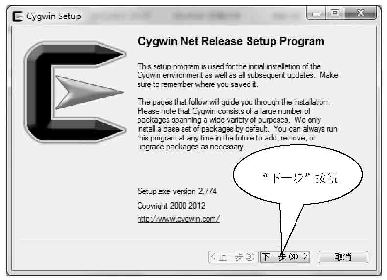
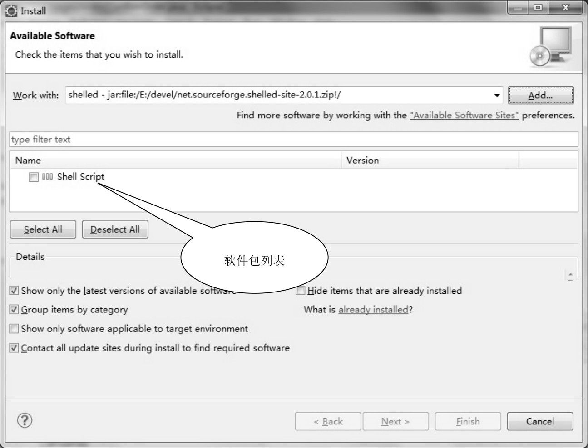

第2章
Shell编程环境的搭建
与其他的程序设计语言相比，Shell的编程环境极其简单。通常情况下，用户只需要一个文本编辑器就可以开始Shell程序设计了。当然，如果有其他一些辅助性的工具，则会使得Shell编程更加简单。本章将介绍在不同的操作系统平台上面，如何搭建Shell编程的环境，以及Linux上面文本编辑器的选择。
本章主要涉及的知识点如下所述。
- 在不同的操作系统上搭建Shell编程环境：主要介绍在Windows、Linux及BSD等常见的操作系统上面如何搭建Shell编程环境。
- 编辑器的选择：主要介绍Linux上面的图形化的文本编辑器、终端模拟器，以及非图形化的文本编辑器的使用方法。
- 系统环境的搭建：主要介绍Shell配置文件和命令别名的使用方法。
2.1 在不同的操作系统上搭建Shell编程环境
尽管Shell程序一般都是在UNIX或者Linux等操作系统上面运行的，但是作为开发者来说，他所使用的操作系统却不一定是UNIX或者Linux，完全有可能是Windows等其他的操作系统。本节将介绍在不同的操作系统上面，如何搭建Shell编程环境。
2.1.1 在Windows上搭建Shell编程环境
对于开发者来说，Windows可能是最常用的操作系统了。由于Windows有着非常人性化的图形界面，可以大大地提高开发者的开发效率。
如果想要在Windows上面进行Shell编程，则必须安装一个UNIX模拟器。通过UNIX模拟器，在Windows上面模拟出一个类似于UNIX或者Linux的Shell环境。通过上面的介绍，可以发现模拟器与虚拟机非常相似，但是这两者有着本质的区别。这是因为大部分的模拟器仅仅是在Win32系统下实现了POSIX系统调用的API，而不是一个完整的操作系统；虚拟机则是虚拟出了一台完整的机器，包括硬件。在虚拟机里面安装的是一个完整的操作系统。
尽管与真正的UNIX或者Linux相比，模拟器实现的功能极其有限，但是对于简单的Shell开发来说，使用模拟器已经可以完成大部分的功能。在众多的模拟器中，最常用的是Cygwin。
Cygwin是一个非常优秀的UNIX模拟器，最初由Cygnus Solutions公司开发，目前由Red Hat公司维护。Cygwin是许多自由软件的集合，用于在各种版本的Microsoft Windows上，创建出一个UNIX或者Linux的运行环境。Cygwin的主要目的是通过重新编译，将POSIX系统（如Linux、BSD，以及UNIX系统）上面的软件移植到Windows上。对于学习Shell程序设计的人来说，Cygwin无疑是一个非常强大的工具。
用户可以从以下网站下载Cygwin，目前最新版本是1.7.17-1：
下载完成之后，用户可以按照以下步骤进行安装。
（1）双击安装程序setup.exe，出现安装向导，如图2-1所示。

图2-1 Cygwin安装向导
（2）单击“下一步”按钮，开始选择安装类型，如图2-2所示。如果是第一次安装，用户应该选择第1项Install from Internet。选择第1项后，安装程序会从网络上自动下载Cygwin的程序，并且执行安装操作。
图2-2 选择安装类型
（3）单击“下一步”按钮，选择安装位置，如图2-3所示。如果用户使用默认的安装位置，则可以直接单击“下一步”按钮；否则，用户可以单击Browse按钮，选择想要安装到的目标位置。
图2-3 选择安装位置
（4）单击“下一步”按钮，选择安装包的存储位置，如图2-4所示。该位置的作用是用来保存安装程序从网络上下载的安装包文件。如果使用默认位置，则可以直接单击“下一步”按钮；否则，单击Browse按钮，选择其他的位置。
图2-4 选择安装包存储位置
（5）选择网络连接的类型。由于安装程序需要从网络上下载安装包文件，所以需要指定网络连接的类型，如图2-5所示。
图2-5 选择网络连接类型
 提示：通常情况下，用户可以选择第一项，即直接连接。如果需要使用代理服务器，则可以选择第二项或者第三项。
提示：通常情况下，用户可以选择第一项，即直接连接。如果需要使用代理服务器，则可以选择第二项或者第三项。
（6）选择下载软件包的网站，如图2-6所示。用户可以根据自己的实际情况，来选择从哪个网站下载安装包。通常情况下，国内网站的下载速度相对较快。因此，用户可以选择第一项，即网易的镜像站点。
图2-6 选择镜像站点
（7）选择软件包。Cygwin本身是一些自由软件的集合，用户可以根据自己的需要选择安装哪些软件包，如图2-7所示。
图2-7 选择软件包
（8）开始安装。选择好软件包之后，便开始从网络上下载软件，如图2-8所示。
图2-8 安装过程
（9）当所有的软件包安装完成之后，会出现图2-9所示的对话框，单击“完成”按钮，退出安装向导。
图2-9 安装完成
当所有的安装操作都完成之后，用户可以单击桌面上的Cygwin Terminal图标，启动Cygwin模拟终端窗口，如图2-10所示。从图中可以看出，Cygwin的模拟终端窗口与真正的UNIX的终端窗口非常相似。此时，用户可以在提示符后面输入一些Shell命令。
图2-10 Cygwin模拟终端窗口
为了验证能否在Cygwin的模拟环境中执行Shell程序，接下来尝试将第1章中的“Hello, Bash Shell！”程序在刚刚安装完成的环境中执行。执行结果如下：
从上面的执行结果可以得知，在Cygwin的模拟环境中，【例1-5】的执行结果与在Linux中的执行结果基本相同。
注意：在第（7）步中，用户选择的软件包会影响到用户在Cygwin模拟环境中可以使用的命令。所以，在选择软件包的时候，要根据自己的实际需要来选取，例如vi编辑器。如果在安装完成之后，需要添加或者删除软件包，可以重新运行安装程序。
2.1.2 在Linux上搭建Shell编程环境
由于Linux本身都会默认安装Shell脚本的运行环境，所以通常情况下，并不需要用户额外安装什么软件。但是，前面已经介绍过，在同一台Linux上面会同时安装多个Shell，并且，这些Shell的语法会有所不同，所以，用户在编写和执行Shell脚本的时候一定要弄清楚当前使用的是哪种Shell。用户可以使用系统变量$SHELL来获取当前系统默认的Shell，如下：
从上面的输出结果可以得知，当前系统默认的Shell为bash。
在前面的许多例子中，我们都是指定使用的Shell为/bin/sh。实际上，在Linux中，这是一个指向/bin/bash的符号链接，如下：
这意味着，尽管我们在程序中指定的解释器为/bin/sh，但是实际上解释Shell脚本的是/bin/bash。
Shell作为一个软件包，当然也有版本，用户可以使用如下命令来查看bash的版本：
从上面的执行结果可以得知，当前bash的版本为4.1.2。这个版本并不是bash的最新版本，目前bash的最新版本为4.2.0。为了能够使用最新版本的bash，用户可以自己编译bash，步骤如下所述。
（1）下载bash源代码，命令如下：
在上面的命令中，wget命令使用远程服务器下载文件，其参数是bash最新版本的网址。
（2）解压源代码，命令如下：
（3）配置编译环境，命令如下：
（4）测试编译。为了判断源代码是否能够编译成功，用户可以使用以下命令来测试：
如果以上命令没有任何错误消息，则用户可以进行源代码编译操作。
（5）编译bash，命令如下：
在默认情况下，bash将被安装到/usr/local/bin下面。
（6）查看是否安装成功。首先切换到新版本的bash的安装目录，如下：
接下来，切换到新版本的bash，然后查看当前bash的版本，命令如下：
从上面的命令可以得知，当前的bash的版本已经是4.2.0了。这表示，新版本的bash已经编译成功。但是，目前用户还不能使用这个新的Shell。因为出于安全考虑，用户只能使用/etc/shells文件中列出的Shell。下面的命令列出了该文件的内容：
从上面的输出结果可以得知，用户可以使用的Shell有5个，而前两个实际上都是bash。
为了能够使用户使用这个新的Shell，我们需要将其添加到这个配置文件中。具体添加的方法有很多种，用户可以直接使用vi编辑器修改/etc/shells文件，追加一行关于新的Shell的路径信息即可，如下：
2.1.3 在FreeBSD上搭建Shell编程环境
FreeBSD是UNIX两大流派中BSD流派的比较典型的一个代表，也是目前应用比较广泛的一个UNIX系统。在默认情况下，FreeBSD使用的Shell为csh，这一点，可以通过系统变量$SHELL来获得，如下：
因此，如果用户在其他的Shell环境进行程序设计的话，必须自己安装所需要的Shell。下面以bash为例来说明如何在FreeBSD上面安装其他的Shell。
用户可以通过两种方式来安装bash，其中第一种是通过软件包，这种方式是安装已经编译好的二进制文件，因此安装起来相对较快；另外一种是通过Ports，这种方式是从远程服务器下载软件包的源代码，然后在本地进行编译和安装，因此，需要花费额外的编译时间。下面将分别介绍这两种方式。
1．使用软件包的方式安装bash
如果用户想要直接安装二进制软件包，则需要使用pkg_add命令，如下：
在上面的命令中，选项-r表示需要从远程服务器下载软件包，后面的bash是软件包的名称。当输入以上命令，并且按回车键之后，pkg_add命令便开始搜索远程的服务器，找到bash软件包及其所依赖的其他软件包并下载到本地。当命令执行完成之后，bash就已经可以使用了。
2．使用Ports方式安装bash
通过Ports的方式来安装bash同样非常简单。在使用Ports之前，必须确保当前的FreeBSD系统已经安装了Ports树，然后执行以下命令安装bash：
此时，FreeBSD的Ports管理工具会自动从远程服务器下载bash的源代码，然后编译并且安装。
前面讲过，在Linux上面安装新的Shell后，需要编辑/etc/shells文件，追加新的Shell路径。在FreeBSD中，当用户使用pkg_add命令安装新的Shell之后，则无需再编辑该文件，因为pkg_add命令会自动将新的Shell添加到该文件中。
用户唯一要做的事情就是更改登录后的默认的Shell。这个操作可以使用chsh命令来完成。chsh命令可以用来修改一些用户的信息，包括默认的Shell。在命令行中执行chsh，会自动调用vi或者vim，打开一个编辑窗口，如图2-11所示。
图2-11 chsh命令编辑窗口
然后，用户可以使用vi或者vim的相关命令来修改用户的相关选项。如果想要修改默认的Shell，则可以直接编辑其中的Shell项，将其中的/bin/csh修改为所需要的Shell，例如/usr/local/bin/bash。这样的话，当用户下次登录后就会使用新的Shell。
2.2 编辑器的选择
对于学习Shell编程的用户来说，选择一款好的编辑器是非常重要的。好的编辑器会拥有许多辅助功能，例如语法的提示和自动完成等，从而可以提高开发的效率。尽管与其他程序设计语言相比，Shell并没有专门的编辑器，但是仍然存在一些相对较好的辅助工具。本节将介绍Shell编程中经常使用的一些编辑器。
2.2.1 图形化编辑器
通常情况下，用户都是使用文本编辑器来编写Shell脚本。实际上，也有一些图形化的集成开发工具。其中，最常用的开发工具是ShellEd。ShellEd并不是一个单独的应用程序，它是作为Eclipse的插件使用的。用户可以从Eclipse的官方网站下载Eclipse的最新版本，网址如下：
目前，Eclipse的最新版本为4.2。Eclipse没有安装程序，所有的文件都放在一个压缩包中。用户下载完成之后，只要将其解压，然后执行其中的eclipse.exe文件即可。Eclipse的主界面如图2-12所示。
图2-12 Eclipse主界面
当下载完Eclipse之后，用户可以通过以下步骤来安装ShellEd。
（1）下载ShellEd。用户可以从以下网址下载最新版本的ShellEd：
目前ShellEd的最新版本为2.0.2。下载完成之后的文件名为net.sourceforge.shelled-site-2.0.2.zip。
（2）打开Eclipse，选择Help|Install New Software…命令，打开安装软件对话框，如图2-13所示。
（3）单击Add按钮，弹出添加软件源对话框，如图2-14所示。
在Name文本框中输入软件源的名称，例如shelled，单击Archive按钮，在弹出的对话框中选择刚才下载的ShellEd压缩文件。最后单击OK按钮，关闭对话框。
（4）Eclipse会自动查找压缩文件中的软件包，并且在对话框中间的列表框中列出来，如图2-15所示。
单击要安装的软件包名称前面的复选框，选中要安装的软件包，然后单击Next按钮，开始安装。
使用ShellEd开发Shell脚本的操作比较简单，步骤如下所述。
图2-13 安装软件对话框
图2-14 添加软件源对话框

图2-15 列出软件源中的软件包
（1）打开Eclipse，选择File|New|Other命令，打开新建项目向导，如图2-16所示。在向导列表中选择Shell Script Project，然后单击Next按钮，进行下一步操作。
（2）在新建项目对话框中，输入项目名称，例如demo，如图2-17所示。然后单击Finish按钮，完成项目的创建。
图2-16 新建项目对话框
图2-17 新建项目对话框
（3）在左边的项目浏览器中，右击刚刚创建的项目名称，选择New|Other命令，打开新建项目向导，如图2-18所示。选择Shell Script中的Shell Script选项，然后单击Next按钮。
（4）在Name文本框中输入脚本文件的名称，例如helloworld.sh，如图2-19所示。然后单击Finish按钮，关闭对话框。
图2-18 新建项目向导
图2-19 指定脚本文件名称
（5）在源代码编辑窗口中输入代码，如图2-20所示。
图2-20 代码编辑窗口
（6）当代码输入完成之后，右击代码窗口，选择Run As|run shell script命令。如果是第一次执行该命令，通常会出现如图2-21所示的对话框。这表示Eclipse找不到Shell脚本的解释器。单击Yes按钮，进行解释器设置。
图2-21 设置Shell脚本解释器提示对话框
（7）在出现的首选项对话框中，单击Add按钮，如图2-22所示。
图2-22 首选项对话框
（8）在出现的解释器添加窗口中，单击Browse按钮，选择Cygwin安装目录中的bin目录中的bash.exe文件，然后单击OK按钮，关闭对话框，如图2-23所示。
图2-23 选择Shell脚本解释器
此时，在解释器列表中会出现刚才选择的Bash Shell解释器，如图2-24所示。
图2-24 解释器列表
（9）再次执行Shell脚本，在Eclipse底部的Console窗口中会显示程序的执行结果，如图2-25所示。
注意：如果在执行Shell脚本的时候出现以下警告提示：
则需要在Windows中设置一个名称为CYGWIN的系统环境变量，其值为nodosfilewarning。
图2-25 在Eclipse中执行Shell程序
从上面的介绍中可以看到，ShellEd是一个非常好用的Eclipse插件。但是该插件本身并不提供Shell脚本的解释功能，所以需要使用前面安装的Cygwin的Bash Shell解释器来解释Shell脚本。
除了ShellEd之外，还有一些其他图形化的文本编辑器，例如Uedit32或者Notepad++等。这些编辑器都在不同的程度上支持Shell的语法提示。如图2-26所示是Uedit32的编辑界面，从图中可以得知，Uedit会自动识别Shell语句的关键字，并且以不同的颜色来显示。
图2-26 使用Uedit32编辑Shell脚本
使用Notepad++可以达到类似的效果，如图2-27所示。
注意：普通的文本编辑器，例如Uedit或者Notepad++等并没有调试功能。
2.2.2 vi（vim）编辑器
尽管图形化的编辑器可以提高Shell编程的效率，但是，用户只能在图形界面的环境中使用。如果在没有图形界面的场合要编写Shell脚本，这些编辑器便无用武之地。实际上，对于熟悉Linux或者UNIX的用户来说，很少使用图形化的编辑器。在绝大多数情况下，这些用户往往更喜欢选择非图形化的编辑器，最常用的是vi或者vim，其中vim是vi的增强版。在许多情况下，vi已经足够用了，所以下面详细介绍vi编辑器的使用方法。
图2-27 使用Notepad++编辑Shell脚本
vi编辑器是Linux上最常用的编辑器，很多Linux发行版都默认安装了vi。其中，vi这个名称是visual interface的缩写。vi拥有非常多的命令，但是正因为有非常多的命令，才使得vi的功能非常灵活和强大。在一般的Shell编程和系统维护中，vi已经完全够用了。下面详细介绍vi编辑器的使用方法，主要包括vi的使用模式、文件的打开、关闭和保存、插入文本或者新建行、移动光标、删除、恢复字符或者行，以及搜索等。
通常认为，vi有3种使用模式，分别为一般模式、编辑模式和命令模式。在每种模式下面，用户都可以分别执行不同的操作。例如，在一般模式下，用户可以进行光标位置的移动、删除字符，以及复制等；在编辑模式下，用户可以插入字符或者删除字符等；在命令模式下，用户可以保存文件或者退出编辑器等。下面将分别介绍这3种模式的使用方法。
1．一般模式
当用户刚刚进入vi编辑器的时候，当前的模式就是一般模式。一般模式是3个模式中功能最为负责的模式，一般的操作都在该模式下完成。由于vi并没有提供图形界面，所以所有的操作都是通过键盘来完成的。由于在字符界面下，没有鼠标的辅助，光标位置的移动是一个非常麻烦的问题。因此，vi提供了许多关于光标移动的功能键，表2-1列出了这些功能键及其功能描述。
表2-1 光标移动快捷键
| 操 作 | 快 捷 键 | 说 明 |
| 向下移动光标 | 向下方向键、j键或者空格键 | 每按1次键，光标向正下方移动1行 |
| 向上移动光标 | 向上方向键、k键或者backspace键 | 每按1次键，光标向正上方移动1行 |
| 向左移动光标 | 向左方向键或者h键 | 每按1次键，光标向左移动过1个字符 |
| 向右移动光标 | 向右方向键或者l键 | 每按1次键，光标向右移动1个字符 |
| 移至下1行行首 | 回车键 | 每按1次键，光标会移动到下1行的行首 |
| 移至上1行行首 | -键 | 每按1次键，光标会移动到上1行的行首 |
| 移至文件最后1行 | G键 | 将光标移动到文件最后1行的行首 |
注意：除了表2-1中列出的光标移动的快捷键之外，还有部分快捷键是在命令模式使用，例如行定位或者移动指定行数等，这些操作放在命令模式中介绍。
由于光标的移动相对比较简单，所以此处不再举例说明，用户可以使用vi打开一个文件，使用表2-1列出的快捷键来尝试移动光标。
插入文本也是编辑器的一项基本功能。为了能够快速地在指定的位置插入文本，vi编辑器提供了许多相关的命令，如表2-2所示。
表2-2 文本操作快捷键
| 操 作 | 快 捷 键 | 说 明 |
| 右插入 | a | 在当前光标所处位置的右边插入文本 |
| 左插入 | i | 在当前光标所处位置的左边插入文本 |
| 行尾追加 | A | 在当前行的末尾追加文本 |
| 行首插入 | I | 在当前行的开始处插入文本 |
| 插入行 | O或者o | O键在当前行的上面插入一个新行，o键将在当前行的下面插入一个新行 |
| 覆盖文本 | R | 覆盖当前光标所在的位置以及后面的若干文本 |
| 合并行 | J | 将当前光标所在行与下面的一行合并为一行 |
在表2-2中列出的快捷键中，除了J键之外，其他的所有的快捷键都会导致vi编辑器从一般模式切换到编辑模式。I键的功能是在当前行的开始位置插入文本，不包括空白字符。
注意：使用文本操作快捷键进入编辑模式后，可以通过Esc键返回到一般模式。
文本的复制和粘贴等功能也是在一般模式下完成的。表2-3列出了常用的与文本复制和粘贴有关的快捷键。
表2-3 文本复制和粘贴快捷键
| 操 作 | 快捷键 | 说 明 |
| 复制行 | yy | 将当前行复制到缓冲区。如果想要定义多个缓冲区，可以使用ayy、byy以及cyy语法。其中yy前面的字符表示缓冲区的名称，可以是任意单个字母。这样的话，可以将多个单独的行复制到多个缓冲区中，各个缓冲区相互之间不受影响 |
| 复制多行 | nyy | 将当前行以及下面的n行复制到缓冲区，其中n表示一个整数。与yy命令相似，用户也可以使用anyy或者bnyy等语法来命名缓冲区 |
| 复制单词 | yw | 复制从光标当前位置到当前单词词尾的字符 |
| 复制多个单词 | nyw | 其中n是一个整数，表示从光标当前位置开始，复制后面的n个单词 |
| 复制光标到行首 | y^ | 从当前光标所处的位置开始，复制到当前行的行首 |
| 复制光标到行尾 | y$ | 从当前光标所处的位置开始，复制到当前行的行尾 |
| 粘贴到光标后面的位置 | p | 将缓冲区中的字符串插入点当前光标所处位置的后面。如果定义了多个缓冲区，则使用ap方式来粘贴，其中字母a表示缓冲区的名称 |
| 粘贴到光标前面的位置 | P | 将将缓冲区中的字符串插入到当前光标所处位置的前面。如果定义了多个缓冲区，则使用aP的方式来粘贴，其中字母a表示缓冲区的名称 |
在表2-3列出的快捷键中，yw快捷键复制的并不一定是整个单词，它是从光标当前的位置开始复制，如果当前光标处于某个单词的中间，则yw命令将会复制从当前光标位置开始该单词后面的所有的字符。例如，在图2-28中光标所处的位置在单词“filename”的字母“i”上面，所以如果使用yw快捷键，则复制到缓冲区的字符为“ilename”。

图2-28 复制单词
与之相类似，如果使用nyw快捷键，则会复制从当前单词的当前字符开始，一直到指定单词数的结尾。例如，在图2-28中，如果使用2yw快捷键，则会复制字符串“ilename in”到缓冲区中。文本的粘贴比较简单，此处不再举例说明。
最后，文本的删除也是在一般模式下完成的。表2-4列出了常用的文本删除的快捷键及其功能。
表2-4 删除文本快捷键
| 操 作 | 快捷键 | 说 明 |
| 删除当前字符 | x | 删除光标所在的位置的字符 |
| 删除多个字符 | nx | 删除从光标所在位置开始，后面的n个字符 |
| 删除当前行 | dd | 删除光标所处的整个行 |
| 删除多个行 | ndd | 删除包括当前行在内的n行 |
| 撤销上一步操作 | u | 撤销刚刚执行的操作 |
| 撤销多个操作 | U | 撤销针对当前行的所有操作 |
在表2-4中，其中最常用的操作就是删除当前的字符和删除当前行，这两个操作分别由快捷键x和dd完成。
注意：vi的许多快捷键都是由多个字符组成，在使用的时候一定要注意快速地依次按下指定的键。
2．编辑模式
前面已经介绍过，当用户执行了表2-2中除J键之外的任何快捷键，都会使得vi从一般模式切换到编辑模式。vi的编辑模式与其他编辑器的编辑模式没有太大的区别。在编辑模式下，用户可以使用上、下、左和右4个方向键移动光标，使用backspace键和del来删除光标前面的字符，还可以在光标所在的位置插入字符。
注意：在编辑模式下，用户不能使用h、j、k和l这4个键移动光标，也不能使用x键删除字符。因为在编辑模式下，这些字母都被当做是正常的字母。
3．命令模式
命令模式也是使用比较多的一种模式，在命令模式下，用户主要完成文件的打开、保存、将光标跳转到某行，以及显示行号等操作。下面将分别详细介绍这些功能。vi的命令模式需要从一般模式进入，当用户在一般模式下，按冒号键“:”之后，会在vi编辑界面的底部出现命令提示符，如图2-29所示。
图2-29 命令模式提示符
当出现图2-29中的命令提示符之后，用户就可以输入vi命令，例如保存文件或者退出vi编辑器。表2-5列出了常用的vi命令。
表2-5 常用的vi命令
| 操 作 | 命令 | 说 明 |
| 打开文件 | :e | 打开另外一个文件，将文件名作为参数 |
| 保存文件 | :w | 保存文件，即将文件的改动写入磁盘。如果将文件另存为其他文件名，则可以将新的文件名作为参数 |
| 退出编辑器 | :q | 退出vi编辑器 |
| 直接退出编辑器 | :q! | 不保存修改，直接退出vi编辑器 |
| 退出并保存文件 | :wq | 将文件保存后退出vi编辑器 |
在使用vi编辑文件的时候，如果想要直接打开某个文件，可以将文件名作为参数传递给vi命令，例如，以下命令将调用vi编辑器，并且打开demo.sh文件：
如果已经启动了vi编辑器，用户还想编辑另外一个文件，则可以按下冒号键，进入命令模式，使用:e命令打开另外一个文件。由于vi只能同时编辑一个文件，所以在打开另外一个文件的同时，当前打开的文件将被关闭。
在编辑文件的过程中，如果想要将当前的改动写入磁盘，则可以进入命令模式，使用:w命令将文件内容重新写入磁盘。
如果想要退出vi编辑器，则可以使用:q命令，其中字母q表示退出（quit）。在当前文件已经做了改动的情况下，如果用户使用:q命令退出vi，编辑器会给出保存文件的提示，如图2-30所示。该提示告诉用户，文件内容修改后并没有将改动写入磁盘。如果用户已经确定丢弃当前所做的修改，则可以使用:q!命令，该命令将直接退出vi编辑器，不给出任何提示。
图2-30 保存文件提示信息
另外，:w和:q这两个命令可以组合使用，变成一个命令，即:wq。当这两个命令组合起来时，表示将文件内容写入磁盘后，退出vi编辑器。在组合使用时，这两个命令的顺序不能颠倒，一定是:w在前，:q在后。
注意：感叹号“!”在vi编辑器中表示跳过某些检查，强制执行某些操作。例如，丢弃当前的修改，直接退出vi编辑器，则可以使用:q!命令；如果丢弃当前的修改，直接打开另外一个文件，则可以使用:e!命令；如果系统管理员修改了某些只读文件，则可以使用:w!命令强制将改动写入磁盘，如图2-31所示。
图2-31 修改只读文件
在命令模式下，除了表2-5列出的文件操作的命令之外，还有其他一些常用命令，如表2-6所示。
表2-6 常用的其他命令
| 操 作 | 命令 | 说 明 |
| 跳至指定行 | :n、:n+或者:n- | :n表示跳到行号为n的行，:n+表示向下跳n行，:n-表示向上跳n行 |
| 显示或者隐藏行号 | :set nu或者:set nonu | :set nu表示在每行的前面显示行号；:set nonu表示隐藏行号 |
| 替换字符串 | :s/old/new、:s/old/new/g、:n,m s/old/new/g或者:%s/old/new/g | :s/old/new表示用字符串new替换当前行中首次出现的字符串old；:s/old/new/g表示用字符new替换当前行中所有的字符串old；:n,m s/old/new/g表示用字符串new替换从n行到m行所有的字符串old；:%s/old/new/g表示用字符串new替换当前文件中所有的字符串old |
| 设置文件格式 | :set fileformat=unix | 将文件修改为unix格式，如win下面的文本文件在linux下会出现^M。其中fileformat可以取unix或者dos等值 |
对于编写和调试程序的用户来说，在vi编辑器中显示行号是一项非常有用的辅助功能，它可以帮助用户快速地定位出现错误的行。用户可以在命令模式下使用:set nu命令显示行号，如图2-32所示。
最后，再介绍一下文本的搜索。当文件内容比较长时，使用文本搜索可以快速地查找某些字符串。尽管vi的文本搜索是在一般模式下进行的，但是它的使用方法与其他一般模式下的功能有所区别，甚至可以将该项功能单独称为搜索模式，所以，将文本搜索单独放在此处介绍。
用户可以在一般模式下通过反斜线“/”快捷键进入文本搜索模式，如图2-33所示。
图2-32 显示行号
图2-33 搜索模式
当进入搜索模式后，用户可以在提示符后面输入要搜索的字符串，然后按回车键。此时，光标会停留在当前文件中指定的字符串第一次出现的位置，如图2-34所示。
如果要搜索的文本出现了多次，可以使用n键继续向下搜索下一个出现的位置；使用N键向上搜索前一个出现的位置。如果要搜索的文本在当前文件中没有出现，则会给出以下提示：
注意：vi虽然有比较多的命令，但是只要勤加练习，相信用户会很快地熟练掌握，同时也会给工作或学习带来更高的效率。如果不知道自己处在什么模式时，可以按两次Esc键即可回到命令模式，最后提醒一点，注意英文字母的大小写。
图2-34 搜索字符串
2.3 系统环境的搭建
在运行Shell程序的时候，除了脚本本身之外，还有许多因素会影响到Shell的执行结果。这里面主要有Shell本身的环境以及命令的别名等。本节将介绍这两方面的相关知识。
2.3.1 Shell配置文件
前面已经介绍过，到目前为止，已经出现了许多种类型的Shell，其中最常用的有sh和bash等。这些不同的Shell都有各自的系统环境变量的设置方法，分别保存在不同的配置文件中。下面分别介绍这两种Shell的配置文件的使用方法。
注意：在Linux中，sh被设计成bash的符号链接。
1．sh
Bourne Shell（sh）的配置文件主要有两个，分别为每个用户主目录中的.profile文件以及/etc/profile文件。在前面的两个文件中，后者是所有用户共同使用的文件。每个用户在登录Shell之后，会首先读取和执行/etc/profile文件中的脚本，然后再读取和执行各自主目录中的.profile文件。因此，用户可以将所有用户都需要执行的脚本放在/etc/profile文件中。下面的代码是某个/etc/profile文件的部分内容：
从上面的代码可以得知，/etc/profile文件的内容与普通的Shell脚本并没有太大的区别。
用户主目录中的.profile文件是一个隐藏文件，该文件的内容与/etc/profile几乎是一样的。该文件是每个用户私有的文件，每个用户在登录Shell的时候会自动执行各自的.profile文件，用户之间不会相互影响。.profile文件会在/etc/profile文件之后读取和执行，因此，如果这两个文件中有相同的环境变量，.profile文件中的变量的值会覆盖/etc/profile文件中的相同变量的值。
注意：在UNIX或者Linux中，以圆点开头的文件为隐藏文件。用户可以使用ls命令的-a选项来显示隐藏文件。
2．bash
Bourne-Again Shell（bash）的配置文件主要有5个，其中有4个位于用户主目录中，分别为.bash_profile、.bashrc、.bash_logout和.bash_history，有一个位于/etc/目录中，名称为bashrc。
.bash_profile位于每个用户的主目录中，在该文件中用来保存每个用户自己使用的Shell信息。当用户登录时，该文件将被读取并执行，并且该文件仅被执行一次。默认情况下，.bash_profile文件常常用来设置环境变量，执行用户的.bashrc文件。下面的代码是某个系统中root用户的.bash_profile文件的内容：
从上面的代码可以看出，.bash_profile文件在第5行调用了用户主目录中的.bashrc文件。第10行设置了PATH系统变量，第12行将系统变量导出。
.bashrc文件包含专属于某个用户的bash的相关信息，当用户登录以及每次打开新的bash时，该文件将被读取并执行。下面的代码是某个系统中root用户的.bashrc的内容：
从上面的内容可以得知，该文件主要用来定义别名和函数，例如第5行定义了命令“rm-i”的别名为rm，第6行定义了命令“cp -i”的别名为cp。另外，该文件还会调用/etc/bashrc文件，例如上面代码中的第11行。
.bash_logout文件在当前用户每次退出Shell时执行。如果没有特别的要求，该文件的内容通常为空。
etc/bashrc与sh中的/etc/profile文件非常相似，它是所有使用bash的用户共同使用的文件。当任何用户在登录bash后，都会执行该文件中的代码。下面的代码是某个Linux系统中的/etc/bashrc的部分内容：
注意：Linux不建议用户直接修改/etc/profile或者/etc/bashrc文件，应该尽量将用户的配置信息放在用户主目录中的对应文件中。
2.3.2 命令别名
顾名思义，命令别名是命令的另外一个名称。在Linux中，设置命令别名的作用主要是为了简化命令的输入。对于一个包含许多选项和参数的命令，用户可以为其设置一个别名，这样的话，在调用该命令的时候只要使用别名就可以了。
例如，在Linux中，为了提高安全性，通常为以下两个命令设置别名：
和
在这两个命令中，-i选项的作用是相同的，都是使得前面的命令进入交互式模式。如果不使用交互模式，rm命令可能会直接删除文件，而不给用户任何提示；cp命令也会直接覆盖已经存在的文件，而不给用户任何提示。这样的操作无疑会给用户带来非常大的风险。因此，在绝大多数的Linux系统，这两个命令的别名设置方法为：
在上面的代码中，alias命令用来设置命令别名，其基本语法如下：
其中，参数command_alias表示命令的别名，command表示某个Shell命令。当设置了命令别名之后，用户就可以像使用普通的命令一样使用别名。例如，在上面的代码中，通过alias命令为“rm -i”命令设置了别名为rm，这样的话，用户在使用rm命令时，实际上使用的是“rm-i”命令。
注意：在Linux Shell中，别名拥有最高的执行优先级，所以尽管系统中有rm命令，但是Shell仍然优先使用rm别名。另外，其他对象的优先级从高到低分别为关键字（如if、functions等）、函数、内置命令可执行文件和脚本。
2.4 小结
本章详细介绍了Shell编程环境的搭建，主要内容包括在不同的操作系统上面搭建Shell执行环境、编辑器的选择、Shell环境变量的设置方法和命令别名。重点在于掌握在Cygwin中的安装和配置方法、ShellEd的使用方法，以及vi中常用的命令。在下一章中，将介绍Shell编程中的变量和引用。
Table of contents
- 内容简介
- 前言
- 目录
- 第1篇 认识Shell编程
-
第2篇 Shell编程基础
- 第3章 变量和引用
- 第4章 条件测试和判断语句
- 第5章 循 环 结 构
- 第6章 函数
- 第7章 数组
- 第8章 正则表达式
- 第9章 基本文本处理
- 第10章 流 编 辑
- 第11章 文本处理利器awk命令
- 第12章 文件的操作
- 第13章 子Shell与进程处理
- 第3篇 Shell编程实战
- 附录CD